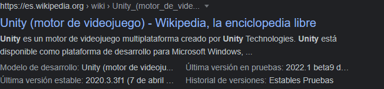

Un motor de búsqueda o buscador es un sistema informático que busca archivos almacenados en servidores web. Las búsquedas se hacen a través de palabras. Esa búsqueda produce un resultado en forma de «Página de resultados del buscador», el cual es un listado de direcciones web en los que se mencionan temas relacionados con las palabras clave buscadas.
Existen algunos tipos diferenciados de buscadores web, pero, en realidad, cuando usamos el término a lo que solemos referirnos a los buscadores de tipo jerárquico o spider (araña). Dicho esto, podemos decir que un buscador es un programa informático que inspecciona las páginas del World Wide Web de forma metódica y automatizada. Uno de los usos más frecuentes que se les da consiste en crear una copia de todas las páginas web visitadas para su procesado posterior por un motor de búsqueda que indexa las páginas proporcionando un sistema de búsquedas rápido.
Las mencionadas arañas no son más que bots. Usualmente actúan de la siguiente manera:
Entre las tareas más comunes de las arañas de la web tenemos:
Los buscadores más utilizados en la actualidad son:
De los tres buscadores mencionados vamos a concentrarnos en Google search ya que es el más usado.
Para utilizar el buscador de Google debemos abrir nuestro navegador usual (edge, chrome, firefox, etc) y en la barra de navegación escribir www.google.com. Eso nos dirigirá a la página principal del buscador en la cual podemos escribir los términos que estamos buscando y así obtener una respuesta
Otras maneras de utilizar el navegador
Las respuestas que devuelven los buscadores consisten en una lista de páginas que contienen información relacionada con los términos buscados. Esa lista aparece dispuesta en la pantalla de manera vertical reservando, usualmente, uno o más espacios iniciales para anuncios o respuestas anunciadas.
En cualquier caso, en la mayoría de los buscadores cada item de la lista viene acompañado de un poco de información contextual para ayudarnos a darnos una idea de si la posible respuesta sirve a los objetivos de nuestra búsqueda.
Acá hay una captura de una de las respuestas devueltas bajo la búsqueda de la palabra Unity
Los elementos que la componen son:
Nos indica la dirección en la que se aloja la respuesta. En este ejemplo nos indica que la respuesta esta alojada en el sistio https://es.wikipedia.org el cual es una enciclopedia online.
En algunos casos aparece la palabra anuncio a la izquierda de la dirección. Esto nos indica de que la respuesta corresponde a un anuncio y no es, necesariamente, una respuesta óptima. Los anuncios suelen aparecer entre las primeras respuestas de la búsqueda.
Es el título de la página destino.
Partes del contenido de la página que coinciden con el término de la búsqueda para que podamos tener un poco de contexto y sepamos si la página es pertinente con lo que estamos buscando.
Algunas páginas contienen valores que se suelen buscar seguido por muchos usuarios, así que el buscador lo presentan la respuesta para ahorrarle al usuario la molestia de entrar en a página.
Esta es la manera más sencilla de buscar sobre algún tema. Lo que debemos hacer es pensar cuales son las tres o cuatro palabras más importantes para describir lo que estamos buscando. Por ejemplo, imaginemos que quisiéramos saber el resultado de un partido de futbol que ocurrió hace una semana, supongamos que los equipos que lo jugaron fueron Ferrocarril Oeste y Newells Old Boys, colocar en la barra de búsqueda “resultado del partido del domingo entre ferrocarril oeste y newells old boys” sería bastante engorroso e, incluso, podría darnos resultados inesperados (como datos sobre trenes, por ferrocarril, algún tipo de información geográfica por oeste, alguna noticia sobre política por partido, etc.), por lo que lo ideal es concentrarnos en las palabras clave, en este caso: Ferro Newells resultado. Esta última búsqueda seguramente nos dará mejores resultados.
Suelen darse ocasiones en las que necesitamos que el buscador nos encuentre un conjunto de palabras en un orden específico, en esos casos debemos encerrar la expresión entre comillas (“”). La razón principal (aunque no la única) para la que suele utilizar esta función es para encontrar canciones si conocemos parte de la letra (aplica también para secciones de poesías, libros, diálogos de películas o series).
Indique, de las siguientes frases, a que canción, texto, discurso o película pertenecen.
Suele haber ocasiones en las que una palabra puede estar relacionada con varias cosas distintas, por lo que queremos que no nos muestre resultados de algunas de esas cosas. Para eso utilizamos el signo menos (-) antes de la palabra que queremos que no se busque. Imaginemos la siguiente situación:
Google aplica consultas expandidas para obtener búsquedas y resultados más “inteligentes” que lo que hubiera conseguid el usuario por sí mismo. Existen varios tipos, algunos son:
Ciertas expresiones pueden ser reemplazadas por otras más cortas o por palabras de la misma familia.
La búsqueda de abreviaciones pueden también generar resultados con el nombre completamente desplegado, por ejemplo, TIC devuelve Tecnologías de la información y la comunicación.
Google suele corregir los errores de manera automática.
Cuando una palabra no otorga buenos resultados, Google puede probar utilizando sinónimos.
A veces, Google puede sugerir resultados de una palabra en otro idioma, distinto al que usamos para la búsqueda. Por ejemplo, si buscamos STEM (Science, Technology, Engineering and Mathematics) nos puede aparecer CTIM, es decir, su traducción.
En algunas búsquedas Google puede optar por omitir palabras extrañas o insignificantes (artículos, conectores, etc.)
La búsqueda de imágenes en Google es una función que permite a los usuarios encontrar y explorar imágenes en línea a través del popular motor de búsqueda de Google.
Para buscar imágenes en Google, primero debes ingresar a la página de búsqueda de imágenes de Google. Luego, escribe una palabra clave o frase en la barra de búsqueda para describir lo que estás buscando. Por ejemplo, si buscas imágenes de "perros", escribe "perros" en la barra de búsqueda y presiona enter.
Después de realizar la búsqueda, Google mostrará una serie de imágenes relacionadas con la palabra clave que ingresaste. Puedes hacer clic en cualquiera de estas imágenes para obtener una vista previa más grande o hacer clic en el botón "Visitar página" para acceder al sitio web donde se encuentra la imagen.
Google también te permite filtrar los resultados de la búsqueda de imágenes según el tamaño, la resolución, el color y otros criterios de búsqueda. También puedes utilizar la función de búsqueda inversa de imágenes de Google para buscar imágenes similares o relacionadas con una imagen específica que ya tengas.
Es importante tener en cuenta que algunas imágenes pueden estar sujetas a derechos de autor o restricciones de uso, por lo que debes verificar siempre los términos y condiciones del sitio web antes de utilizar cualquier imagen encontrada en línea.
En resumen, la búsqueda de imágenes en Google es una función que permite a los usuarios encontrar y explorar imágenes en línea a través del motor de búsqueda de Google. Puedes realizar búsquedas utilizando palabras clave o frases, filtrar los resultados según diferentes criterios y utilizar la función de búsqueda inversa para encontrar imágenes similares o relacionadas. Siempre debes verificar los términos y condiciones del sitio web antes de utilizar cualquier imagen encontrada en línea para asegurarte de cumplir con los derechos de autor y las restricciones de uso.
La búsqueda de videos en Google es una función que permite a los usuarios buscar y encontrar videos en línea a través del popular motor de búsqueda de Google.
Para buscar videos en Google, debes ingresar a la página de búsqueda de videos de Google y escribir una palabra clave o frase que describa lo que estás buscando en la barra de búsqueda. Por ejemplo, si buscas videos de "tutoriales de maquillaje", escribe "tutoriales de maquillaje" en la barra de búsqueda y presiona enter.
Después de realizar la búsqueda, Google mostrará una serie de resultados de videos relacionados con la palabra clave que ingresaste. Estos resultados pueden incluir videos alojados en YouTube, Vimeo y otros sitios web de video.
Puedes hacer clic en cualquier resultado de video para ver una vista previa del video y obtener información sobre el mismo, como la duración, la descripción y el número de vistas. Si deseas ver el video completo, haz clic en el botón "Reproducir" en la vista previa.
También puedes filtrar los resultados de la búsqueda de videos según la duración del video, la fecha de publicación, la calidad del video y otros criterios de búsqueda. Además, puedes utilizar la función de búsqueda por voz de Google para buscar videos hablando en lugar de escribir.
Es importante tener en cuenta que algunos videos pueden estar sujetos a derechos de autor o restricciones de uso, por lo que debes verificar siempre los términos y condiciones del sitio web antes de utilizar cualquier video encontrado en línea.
En resumen, la búsqueda de videos en Google es una función que permite a los usuarios buscar y encontrar videos en línea a través del motor de búsqueda de Google. Puedes realizar búsquedas utilizando palabras clave o frases, filtrar los resultados según diferentes criterios y utilizar la función de búsqueda por voz. Siempre debes verificar los términos y condiciones del sitio web antes de utilizar cualquier video encontrado en línea para asegurarte de cumplir con los derechos de autor y las restricciones de uso.
Cuando queremos encontrar un lugar específico en un mapa, podemos recurrir a la búsqueda de mapas en Google. Esto nos permite visualizar la ubicación de un lugar, así como obtener información útil, como direcciones, reseñas y fotografías.
Para buscar un mapa en Google, lo primero que debemos hacer es ingresar a la página de Google Maps. Luego, podemos utilizar la barra de búsqueda ubicada en la parte superior de la página para ingresar el nombre del lugar que deseamos buscar. Por ejemplo, si queremos encontrar la Torre Eiffel en París, podemos escribir "Torre Eiffel, París" en la barra de búsqueda.
Una vez que hemos ingresado la ubicación que deseamos buscar, Google Maps nos mostrará un mapa detallado de la zona. Podemos utilizar la herramienta de zoom para acercarnos o alejarnos del mapa, y también podemos desplazarnos por el mapa para explorar la zona con más detalle.
Además, Google Maps nos brinda información adicional, como reseñas de otros usuarios que han visitado el lugar, fotografías y direcciones para llegar al lugar. También podemos utilizar la herramienta de búsqueda de rutas para encontrar la mejor manera de llegar al lugar en cuestión.
En resumen, la búsqueda de mapas en Google es una herramienta útil para encontrar ubicaciones específicas, obtener información detallada sobre un lugar y encontrar direcciones para llegar a nuestro destino.